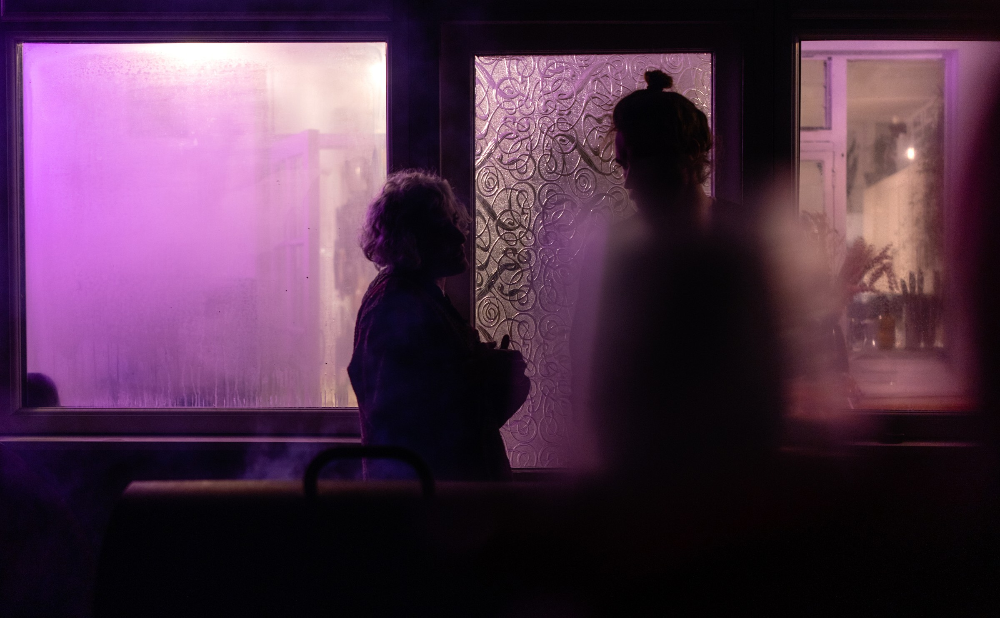

MOOWS / Issue 01 · August 2026
Letters from the Editors

Ivan I
Around a month ago, I opened a grazing map on the nofence.no website (“limitless livestock management”), found cows in the vicinity (in my case, in Epping forest), sat on my bike and went cow-fishing. Some of the English Longhorns were lying on the ground chilling, some, believe it or not, were grazing. I took a bunch of photos from afar. I know that the cows are the most deadly animals on the British Isles, so I didn’t want to make them angry. At that time I didn’t know that English Longhorns are the most calm and easy-going cows to ever exist, so I first waited for 10 minutes pretending to explore some bark on a tree in order for cows to get accustomed to me — then came closer. Then closer..
They were beautiful.. horns in all directions possible.. black, white, sepia.. munching on the branches.. chewing the cud.. I was standing there brushing off flies with my tail, trying to blend in. I looked into their eyes.. I saw cow thoughts…
After a prolonged time, a stunning-grand-sharp-horned cow (the alpha cow) approached me. They looked me seriously in the eyes and said:
“hey you. you are suspiciously an uncow. go away.”
This was Spruce. I discreetly snapped a couple of portraits and slowly receded (see the cover). Spruce was following me with their gaze until I disappeared in the bushes.
Even though I was indeed an uncow in the eyes of an English Longhorn Alpha, I nevertheless proudly consider myself a cow. A mooncow, obviously. The magazine you are holding in your hooves is a result of work of 30+ (!) mooncows. There are more mooncows out there, but this is a snapshot of what mooncows are, what they have been and maybe what they will continue to be. This is the first issue of many. This is a tangible manifestation of our diversity and our awesomeness.
We started a year and a half ago with Bennie’s idea of a Moowspaper, this winter it transformed into an idea of a Cowzine. We first were thinking of 16 pages, maybe 20. Now, with the help of you, it’s a Moogazine with 76 AMAZING pages! Here it is
touch it smell it wrinkle it read it criticize it enjoy it
Bennie P
Last winter (2025) I had an idea re-surface, it was an idea that I’ve been thinking about since 2017 (the year 1 PMC - pre-MoonCow) when I hired a “life coach” to help me “do things” so I can become a “better person”.
He helped me formulate an idea. The idea was simple: create a new free newspaper to replace the sun and metro newspapers dominating the tube and littering the seats with gossip and rage bait. I thought this was achievable for me, of course I was both wrong and not ready for the heavy lifting that comes with creating something like a newspaper.
So I let it go and let the time pass.
Last year I collected a group of mooncows in my house and we brainstormed about such a newspaper, and suddenly, with the help of a community this felt a lot more of a possibility and a lot less like just another great (or stupid…) idea I had which will never happen.
A year later and the idea is alive and morphed into something more beautiful than I could ever imagine.
And this is really what this magazine celebrates. It celebrates the opportunity that having a community like the mooncows provides. A space where a person with IHAD (Idea Hyper Active Disorder, obviously…) can throw something stupid (or great) into the ether of the community and somehow it becomes a reality.
A place where ideas are mostly met with a “why not” rather than a “rather not”.
A community in which we accept our limitations and take on projects despite those limitations knowing they would be difficult but understanding that participation is what makes us better.
Thank you moon cows.
And a huge thank you to my Co-editor Ivan for doing most of the heavy lifting while I constantly get distracted.